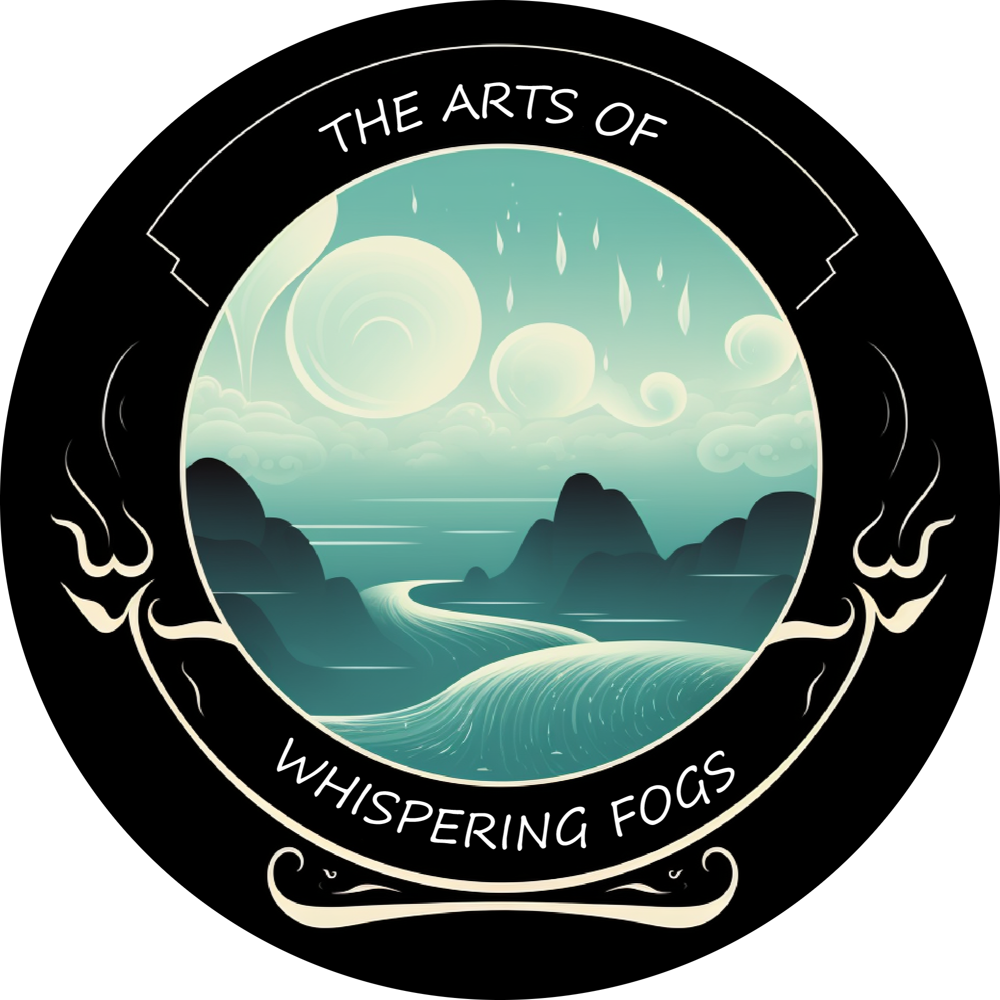

☰
In the realm of artistic enigma lies "Whispering Fogs" An elusive masterpiece that captivates the senses and intrigues the mind, this ethereal collection unveils a world veiled in mystery and obscured by an enchanting mist. Each sketch is a symphony of delicate strokes, conjuring swirling clouds of fog that dance and weave secrets in the air.In this fog-laden universe, familiar forms blur and transform, morphing into phantasmal shapes that exist on the precipice of reality and imagination. Hidden within the mist, enigmatic figures appear, their features obscured like ancient spirits guarding forgotten knowledge.
Each sketch is a doorway to a parallel realm—a place where time stands still and dreams intertwine with reality. The art whispers softly, like an ancient incantation, inviting those who listen closely to enter its realm of wonder. The foggy veils seem to conceal cryptic messages and elusive truths, leaving the viewer with a sense of wonder and curiosity."The Art of Whispering Fog" is a testament to the power of imagination and the allure of the unknown. It is an ode to the unseen forces that shape our reality and the magic that lies just beyond the veil of comprehension. As the fog whispers its riddles, the art invites you to delve into the enigma, unravel its secrets, and discover the profound beauty that lies within the intangible.